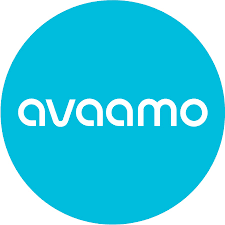
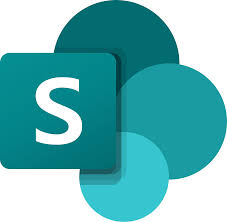

Nisarg Desai
Professional with 2+ years of experience in the FMCG and Banking sectors, specializing in Low-Code/No-Code Platforms, Conversational AI, and Analytics. Proven ability to bridge gaps between business users and technology by understanding core needs, rapidly prototyping solutions, and driving enterprise adoption.
Currently driving internal automation initiatives at Mondelez International. Strong background in Data-Driven Decision-making, Stakeholder Management, Process Optimization, Project Management and Scalable Implementation.
Enthusiastic about the evolution of AI beyond predictive analytics and machine learning that is changing the way we do things and see the world.
Experience
Consultant - No-Code/Low-Code & Conversional AI
üîç Highlights from My Tech Journey
• Delivered 30+ client engagements across automation & conversational AI interfaces, tailored to client needs - significantly improving satisfaction, retention, and operational efficiency
• Recognized for High Adaptability as the only developer contributing across all three technology stacks - Low-Code/No-Code, Conversational Al, and Intelligent Document Processing - leveraging platforms like Power-Platforms, QuickBase, and Avaamo
• Built and deployed enterprise-grade chatbots to automate query handling and internal workflows, resulting in faster response times and improved employee experience
• Executed an Intelligent Document Processing Proof of Concept, rapidly upskilled on the platform, and delivered a functional prototype showcasing automation potential in document-heavy workflows
üöÄ Technical Excellence & Impact
• Spearheaded the implementation of a governance framework, enhancing transparency and reducing process gaps by 30%, improving cross-team collaboration
• Built and scaled automated solutions across multiple regions using Dataverse and Dataflows, enabling workflow automation and seamless integration across Power Platform tools – leading to 40% increase in system adoption and process standardization
• Integrated SharePoint, streamlined external collaboration, reducing turnaround time for critical workflows by 25% and improving cross-functional alignment & securing business-critical content through role-based access control
üß© Leadership, Governance & Team Enablement
• Demonstrated leadership during critical project phases, driving end-to-end execution to ensure 100% on-time, high-quality delivery, while actively supporting team success beyond core responsibilities
• Guided interns and new team members, facilitating smooth onboarding, enhancing team productivity, and acting as a dependable point of contact to strengthen the internal talent pipeline
• Appointed as a POD Lead, responsible for managing delivery timelines, and ensuring that every solution deployed is aligned with business outcomes
Data Analyst Intern
• Automated manual MS Excel processes using SAS, boosting productivity by 14% and reducing manual intervention
• Identified business opportunities through customer data analysis, providing actionable insights for strategic decision-making
• Designed and developed MIS reports, ensuring real-time insights for key decision-makers
• Built an executive dashboard to monitor branch and employee performance, strengthening data
driven decision-making to increase the bank's profitability and efficiency
Key Engagements
üìäBalance Sheet Variance
One of my most impactful projects was the Balance Sheet Variance Application, which began as a regional tool and was eventually scaled globally across JANZ, China, SEA, MENAP, and SSA. The challenge was to automate a highly manual and repetitive process of tracking and justifying trial balance variances.
Led the end-to-end delivery, including:
• Coordinating requirement gathering across multiple time zones
• Designing and building the core logic and relational structures in Dataverse
• Managing development, testing, migration, and go-live across all five regions
The app automated the extraction of trial balance data from Excel files (via Alteryx), identified variances at the HFM group level, and triggered reminders and approvals through a structured workflow.
Built using Power Apps, Dataverse, and Dataflows, this solution replaced a fragmented process with a seamless, scalable platform.
What made this project unique was not just the complexity of logic and automation but the global coordination it required — working with stakeholders across time zones helped sharpen my project and stakeholder management skills. Despite its complexity, the project was delivered on time and is now actively used across all five regions.
January 2024 - Present
ü§ñ Publication Wizard Chatbot
Previously, employees would raise routine queries over email or in person—leading to delays and repeated efforts for the support team. I led the development of a Conversational AI chatbot called Publication Wizard, built on the Avaamo platform, to eliminate this manual dependency.
• Trained the bot on department-specific FAQs, resource locations, and common business queries
• Deployed it across SharePoint, Teams, and WhatsApp, giving users instant access through their preferred channels
• Achieved zero manual intervention, with resolution times dropping from days to seconds
This project showcased how Conversational AI can directly enhance employee experience by delivering speed, consistency, and 24/7 support at scale.
June 2024 - Present
üåç External Manufacturing Interface
Before this app was built, collaboration between Mondelez and external manufacturing plants was managed entirely via Outlook and Teams, making it hard to track conversations, requests, and decisions.
To streamline this, built a centralized interface using QuickBase, tailored for external users and internal teams.
Key highlights:
• Ensured role-based visibility: external plant users only see their plant-specific data, while Mondelez teams have full visibility across all plants
• Managed access controls to allow only specific team members to edit sensitive content
• Replaced email-driven communication with a structured platform, improving response time and audit readiness
This solution has now become a one-stop digital hub for all future external collaboration, with a design that supports scaling across additional plants.
February 2025 - Present
üõ†Ô∏è Equipment Booking App
This solution addressed a critical bottleneck at Mondelez manufacturing plants, where equipment booking was a manual, approval-heavy process that often led to scheduling conflicts and inefficiencies.
Designed and developed a real-time, self-service booking platform using Power Apps and SharePoint.
• Introduced logic to prevent overlapping bookings and ensure equipment availability
• Built Power Automate flows to enable bulk booking, reducing effort and time
• Enabled users to book anytime, anywhere—removing dependency on emails or approvers
The result was a significant improvement in process transparency, ease of use, and operational speed. Designed with scalability in mind, the app continues to support 24/7 operational teams seamlessly.
March 2023 - Present
Skills
- PowerApps (No-Code/Low-Code platform)
- Power Automate
- QuickBase (No-Code/Low-Code platform)
- Avaamo (Conversational AI Platform)
- MS Excel
- SQL
- SAS
- Python
- Project Management
- Trello
- Jira
Tools & Platforms
-

- 
- 
-

-

-

-

PROFESSIONAL ATTRIBUTES
⚙️ Agility & Problem SolvingAgile thinker with a sharp problem-solving approach in fast-paced, evolving settings.
üó´ Adaptability & Collaboration
A collaborative team player with a quick grasp of new processes and workflows.
üó£Ô∏è Communication & Stakeholder Engagement
Excellent communication skills with the ability to translate technical solutions into business value, fostering trust and alignment across stakeholders.
Areas of Interest
ü§ù Professional Growth Areas- Leadership Development
- Data-Driven Insights & Analytics in AI
- Strategic Decision-Making
- AI-Driven Business Transformation & Automation
- Scalable Solution & Implementation
ACHIEVEMENTS & EXTRA-CURRICULAR INVOLVEMENTS
üéñÔ∏è Accolades‚Ä¢ Certificate of Appreciation: Recognized for exceptional performance, securing the top position among all developers at Mondelez for two consecutive years
• Fastest App Development - Developed and launched a fully functional app using QuickBase in just 3 days, setting a benchmark for rapid deployment
üéØ Extra-Curricular Activities:
• Compere - Hosted the technical event - "Prayas" at college
• Stand-Up Comedy - Performed at college festivals and other events
• Played multiple Cricket tournaments:
- DSO tournament as a Team- Player, & MSSA tournament as a Captain